Stayfit is a solution designed to help users achieve their health and fitness goals efficiently. Users can choose the type and difficulty of exercise according to their needs and age. Along with muscular fitness it also has yoga and exercises to relax your mind. Everybody can share their progress/achievements with their close ones in the feed. It also has multiple levels, leader board, daily motivational quotes and consistency points to keep the users motivated and consistent in their fitness journey.
People have always shown care and concern about their health and fitness, but often fail to achieve their goals due to various reasons. It might be their work routines, environment, time constraints or any other personal factor. But the most common and important factor is their lack of motivation which indirectly affects their consistency.
There were few other problems that came up during the user interview like, no proper guidance during exercises, wrong postures that lead to injuries, no simple workouts for beginners and no workouts for seniors (50+).
A mobile application that helps people to follow their fitness regime and keep them motivated throughout the process. This increases their consistency and in turn provides guaranteed results. Users can choose their fitness pack based on difficulty, their proficiency and also age. They can also choose from a variety of workouts like gain muscle, strengthening, build endurance, increase mobility, yoga and many more. In order to provide proper guidance while exercising, video based workouts has been implemented.
Few of the motivational factors that have been implemented are:
Design Thinking approach is used to come up with the design solution which involves the 5 stages: Empathize, Define, Ideate, Prototype and Test.
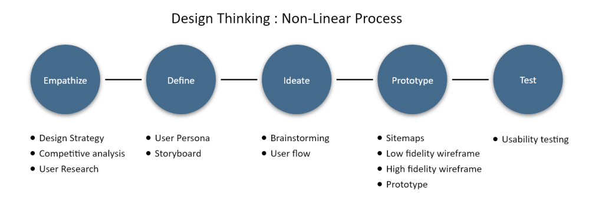
1) Executive Intent
2) Target Audience
3) Genaral Tasks
4) Constraints
Direct competitors: Nike Training club, Freeletics, Olympia, FITTR
Indirect competitors: Instagram
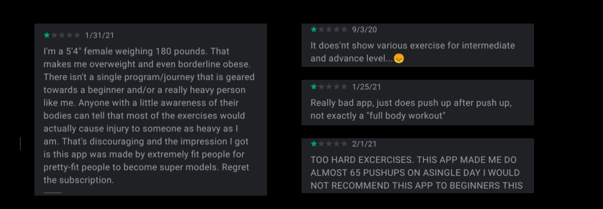
In order to get an empathetic understanding of the users, one-on-one interview was conducted with 4 of them and I learnt about their day to day routines. I got to know about the factors that influence their workouts like, the place where they workout, what kind of exercises they prefer and most importantly their proficiency in them. Two of them preferred to have proper guidance while working out and told how inconvenient few apps were that use timers and list of exercises as a workout routine which requires lot of intervention in-between the exercises. The most important factor that was noticed during these interviews was lack of motivation among the users to maintain consistency in their routines.
Here are few of the main questions asked during the user interview:
Basically, What? How? Why? method was used in the follow-up questions to clearly understand the responses given and I tried to implement the 5 Whys method to know the deep rooted difficulties.
Based on the gathered information a user persona was created which provides insights on the target user, their need, behaviour and goals.
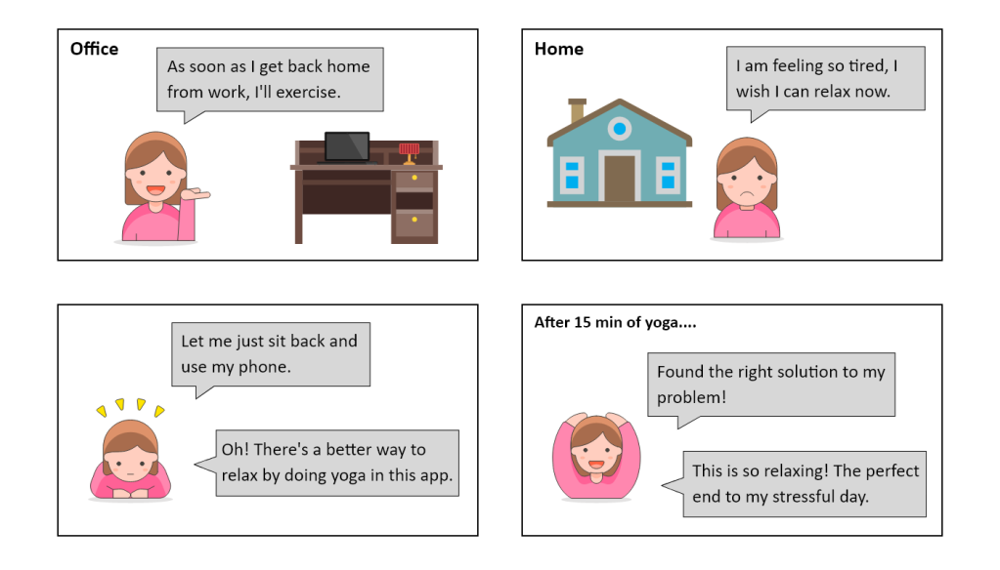
A mixture of brainstorming and braindumping techniques were used to come up with innovative solutions to keep the target audience motivated towards exercising regularly. After refining few ideas in hand, the below ideas were selected and implemented in the application.
Based on the gathered information a user persona was created which provides insights on the target user, their need, behaviour and goals.
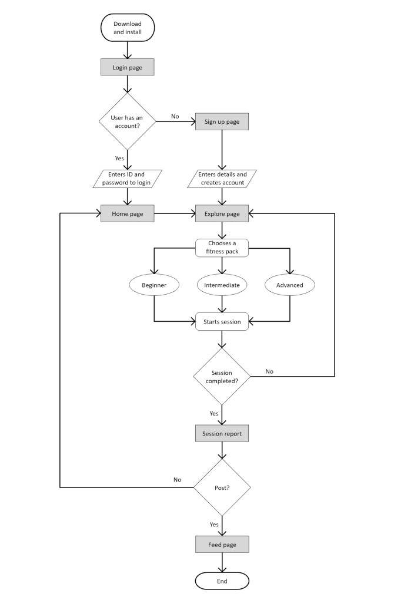
A UX sitemap is a hierarchical diagram of a website or application, that shows how pages are prioritized, linked, and labeled.
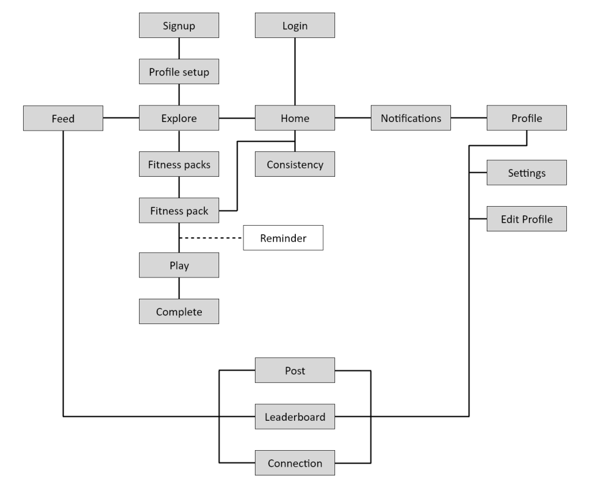
After a thorough brainstorming session and decision making, the ideas were set to be implemented into a paper prototype for basic testing with the users. Few changes and improvements were done based on the observations and feedback and the final design was converted into a high fidelity wireframe before creating the final prototype which is shown below.
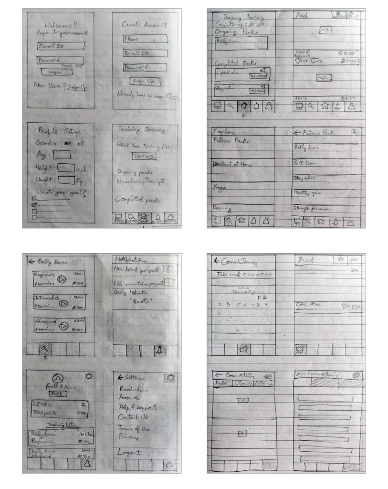
After a thorough brainstorming session and decision making, the ideas were set to be implemented into a paper prototype for basic testing with the users. Few changes and improvements were done based on the observations and feedback and the final design was converted into a high fidelity wireframe before creating the final prototype which is shown below.
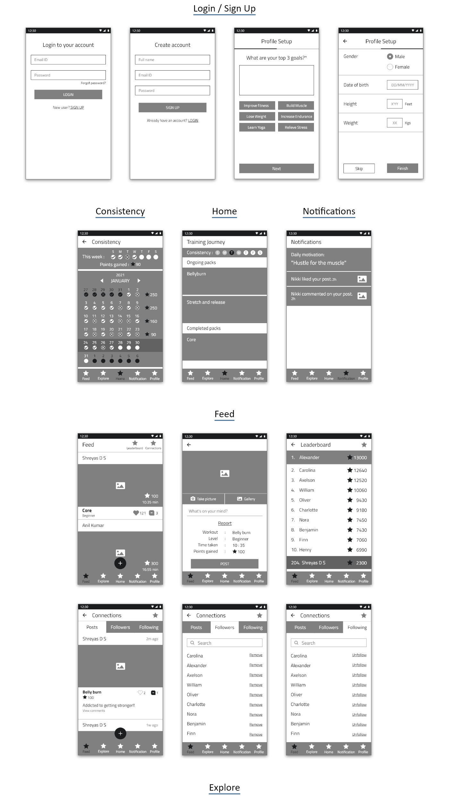
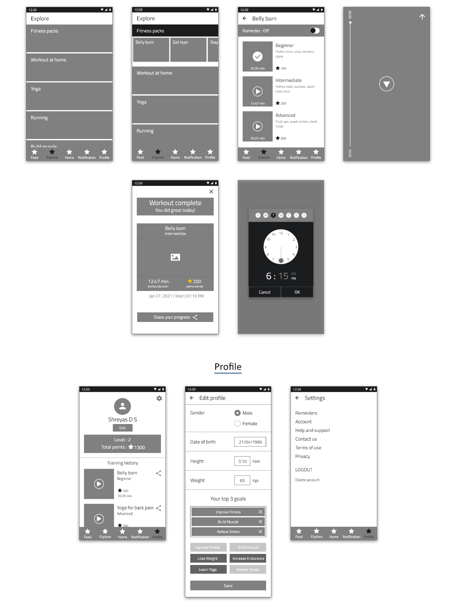
Login / Sign Up
It is designed for a simple one step login/signup with Facebook or Google along with generic email login/signup. The profile setup consists of 2 steps with minimal data entry for faster creation.
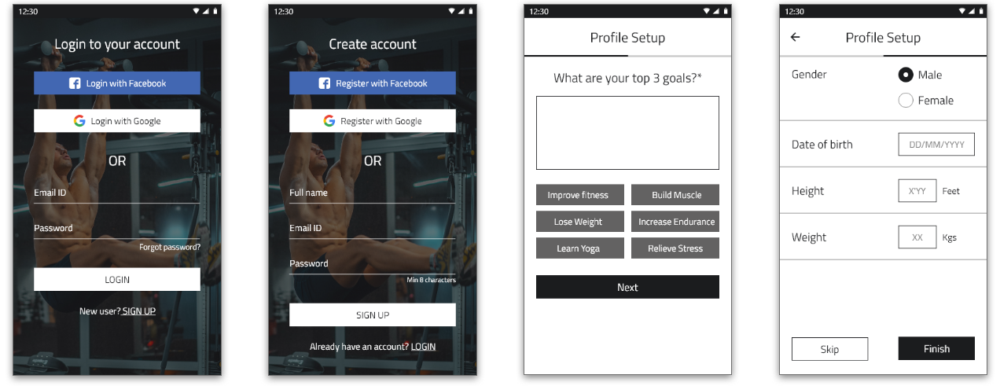
The home screen consists of the important statistics on top along with consistency for the current week.
The consistency screen provides complete detail of a user’s workout frequency for the month and the points gained each week.
The notification screen shows the daily motivational quote along with other notifications from the feed.
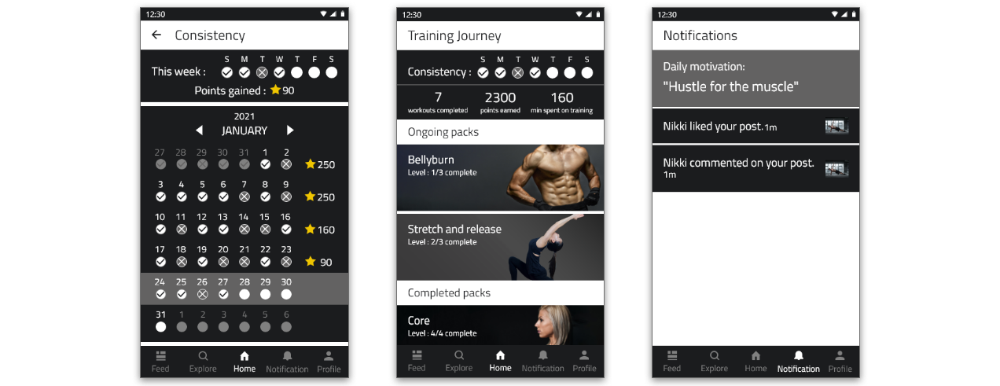
Feed
The feed provides a way to share a user’s progress and connect with their followers. It also updates about other’s achievements and keep them motivated.
The post screen provides a medium to share a user’s workout report along with their workout picture.
The leaderboard shows where they stand among all the members using this app thus pushing them to work harder to reach higher.
The connections screen displays all their posts, their followers and the people they follow.
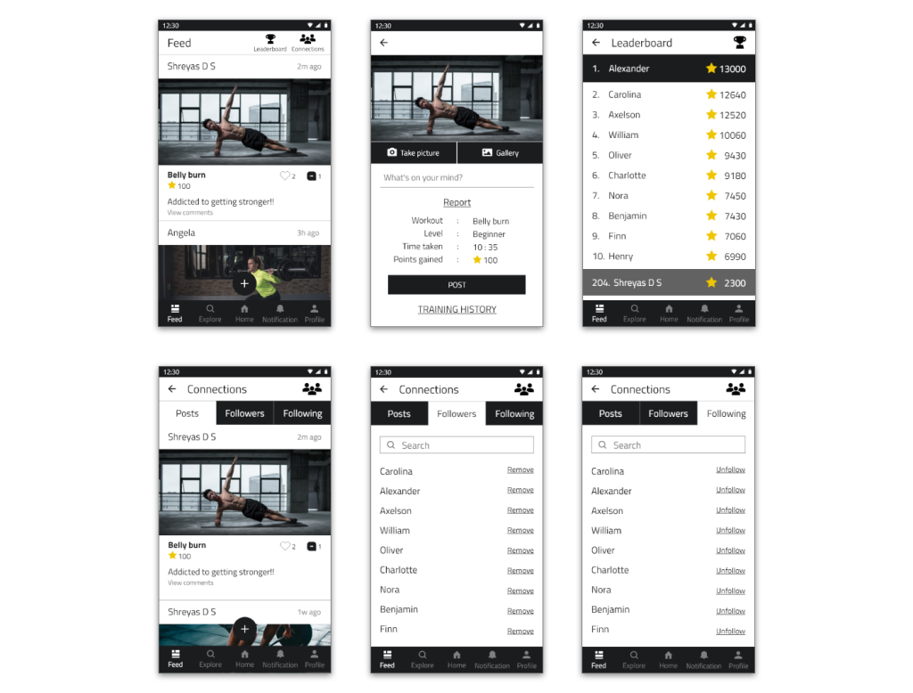
Explore
The explore screen provides a range of workouts from which a user can choose and start their exercise journey. It also allows them to choose the level of difficulty based on their proficiency.
Once the workout is completed user can see a completion screen which shows the summary of their workout which also allows them to share it on their feed.
The reminder option allows a user to set a reminder for their workout so that they don’t miss it in their busy schedule. This can be set for specific days for a particular workout.

Profile
The profile screen provides the essential details of a user with an option to edit. It shows the total points gained and the level of proficiency. It also shows the training history of the user with an option to share it to the feed.
The settings screen displays the general settings of the app along with logout option.
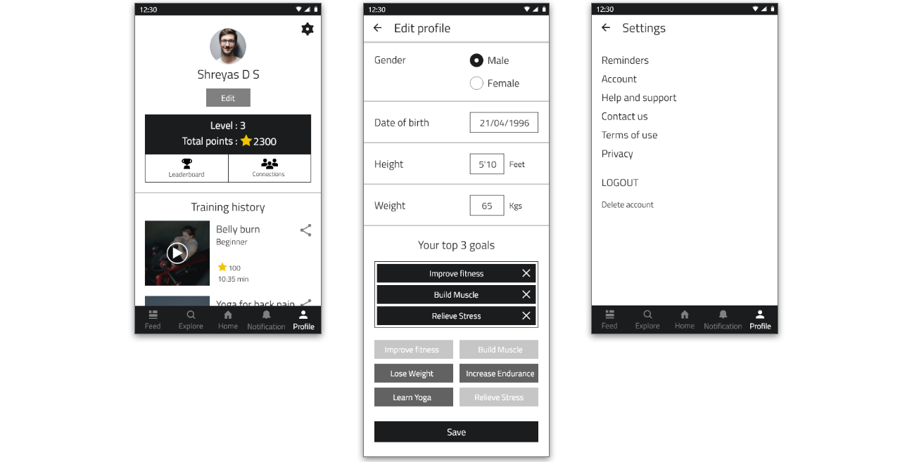
The application evaluation was conducted on the same 4 users who were interviewed for user research so that they can convey any shortcomings based on their expectations.
The below tasks were given and general observations were made,
Tasks
Observations / Feedback